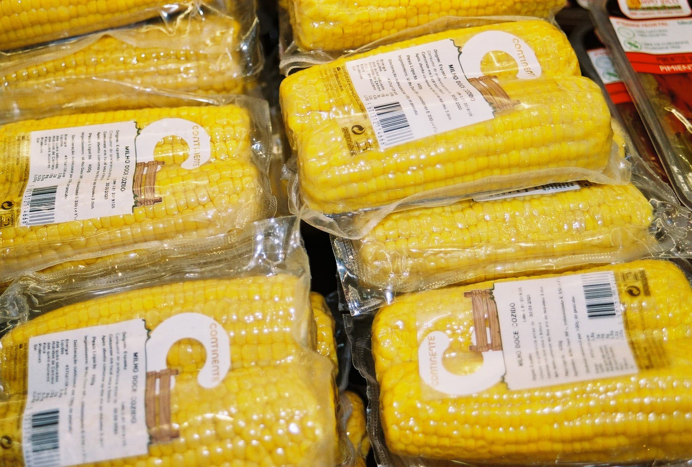

friso
friso
A quantidade de plásticos que se encontram nas grandes cadeias de hipermercados é tomada como uma sátira no seguinte conjunto de imagens. As mesmas apresentam padrões impressionantemente semelhantes entre todas as fotografias. Desta forma o plástico comunica por si e leva o observador a ser bombardeado com elementos visuais que se aproximam de frisos, geométricos ou mais orgânicos, transmitindo uma quantidade absurda de plástico numa única imagem.
